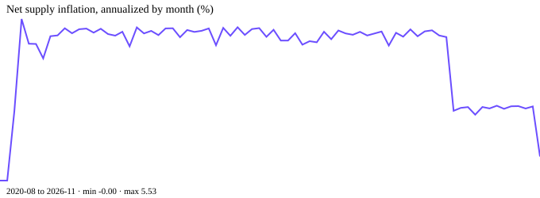
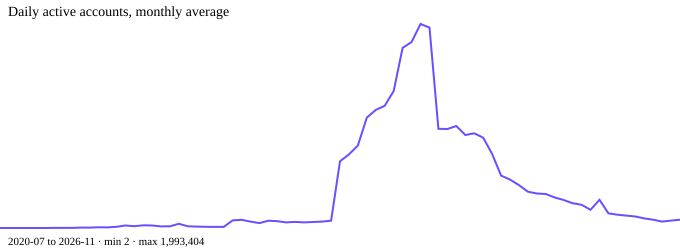
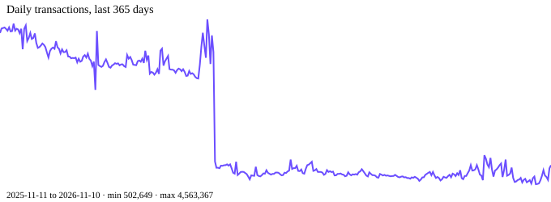
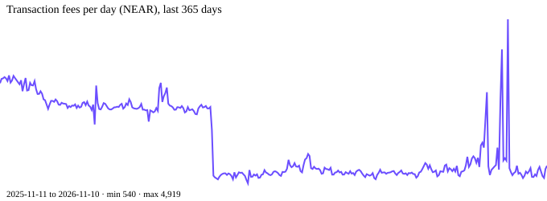
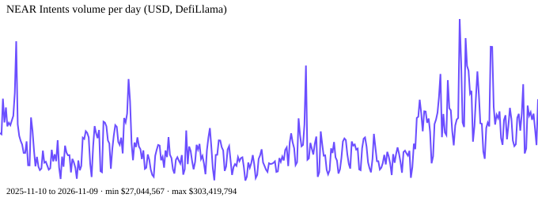

An investment thesis for NEAR, tested against public data. Built for NEAR HACKATHON
(Build Beyond Boundaries), track: Investment Thesis. Hypothesis: settlement volume through
NEAR Intents grows ahead of the activity visible on mainnet, so it reads as a leading
indicator of demand for the network. Every figure on this page is computed by
scripts/analyze.py from the snapshots in data/; rebuild with
bash rebuild.sh. Daily series run to 2026-11-10; the
DefiLlama window ends 2026-11-09 (the last two days are dropped, they are partial).
| Validators (current epoch, RPC) | 338 |
| Total staked | 581,233,869 NEAR (44.3% of supply) |
| Top 10 validators' share of stake | 36.3% |
| Protocol max inflation (on-chain config) | 2.5% per year |
| Measured net supply inflation, last 365 days | 2.48% |
| Staking APY, last completed epoch (NEARBlocks) | 4.91% |
| Real yield (APY adjusted for net inflation) | 2.37% |

data/nearblocks_daily.csv.Stakers earn about 4.91% nominal while supply grows 2.48%, so a staker's share of the network grows roughly 2.37% a year. That part of the demand story holds: staking pays a real, positive return without new buyers.
| Daily active accounts, 30-day average | 58,223 |
| Same window a year ago | 262,972 |
| Daily transactions, 30-day average | 662,520 |
| Same window a year ago | 4,444,290 |
| New accounts per day, 30-day average | 9,573 |
| Same window a year ago | 220,745 |
| Metcalfe fit, monthly, log market cap on log active accounts | slope 0.21, R² 0.28 (73 months) |


On mainnet's own numbers, usage is shrinking, not growing. Price rose over the same year while active accounts fell by about two thirds. Whatever demand is building for NEAR, this series does not show it.
| Total supply now | 1,311,369,614 NEAR |
| Net new supply, last 365 days | 31,740,869 NEAR |
| Transaction fees, last 365 days | 596,325 NEAR |
| Fees as a share of net new supply | 1.88% |

NEAR is not fee-funded at current usage. Supply growth is a policy variable (the inflation cap), not a market outcome, and fees are too small to change that.
| NEAR Intents volume, 30 full days to 2026-11-09 | $3,727,751,510 |
| Average per day | $124,258,384 |
| Average per day, same window a year earlier | $77,935,548 |
| Share of all DEX-classified volume on Near (DefiLlama) | 92.6% |
| Largest native DEX (Rhea), 30 days | $288,871,260 |
| Fees earned by NEAR Intents, 30 days (DefiLlama fees) | $5,458,382 |
| NEAR Intents TVL, all chains / on Near itself | $184,004,347 / $91,749,436 |
| Total value locked on Near (DefiLlama) | $169,269,941 |

Intents is where the growth is. It settles more in a day than the largest native DEX settles in weeks, and it barely registers in mainnet transaction counts, because most settlement happens off the mainnet shards. That is exactly why the two data sets disagree.